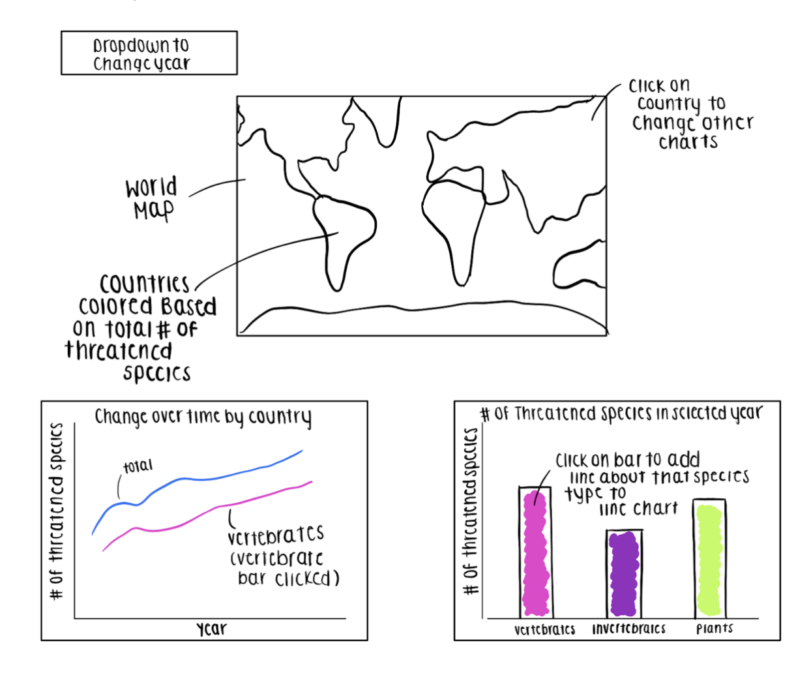

About
Project by: Christina Mackenzie, Grace Myers, Anna Bolger
Project Information
Motivations:
In our investigation we set out to answer the following questions:
- What are the global trends overtime of threatened species?
- In which countries are the number of threatened species highest and lowest?
- How has the total number of threatened species in different countries changed over time?
- How many threatened species of the different types (vertebrates, invertebrates, and
plants) are there in each country by year?
Design Rationale:
We wanted to create a series of visualizations that allows the viewer to go from an initial, macro understanding of threatened species to a more nuanced understanding of what this looks like in different countries.
We made it so that each visualization adds another layer to the viewers experience and allows them to unpack another part of the story. The viewer begins with a macro understanding of threatened species as shown in the map. This is then brought under closer scrutiny by the bar graph, which breaks down by species type, and then even more so by the line chart, which shows change over time for a selected species type in the specific country.
Intended functions of each visualization:
- Map: Show the viewer global trends in threatened species numbers
- Bar chart: Allows us to illustrate the breakdown of different species by country in that year
- Line Chart: Shows trends of the threatened species status in a particular country over time
Take Aways:
- The number of threatened species has increased over time in all areas across virtually all countries
- The number of threatened plants has increased at a higher rate than for other species since 2017
- In 2020, the countries with the highest numbers of threatened species were Madagascar and Ecuador. In these countries, the vast majority of their threatened species were plants
- Countries such as the United States, China, Madagascar and Ecuador have the highest number of threatened species today
Design and Development Process
Initial Plan:
Our initial Plan for the project is as follows:

We ended up following this plan fairly closely. We ended up switching the positioning of the line and bar graphs to make more sense sequentially as you click on different graphs. We also added tool tips to aid the user as well as some additional text boxes to guided the viewer on how to engage with the visualization. Further, we ended up showing lines for all types of species on the line chart initially, allowing the user to highlight a single line rather than add one to the chart.
Lessons Learned:
- Improved our abilitites to collaborate on a coding assignment
- Learned to create links and interactions between multiple tables more efficently
- Learned about the process of coming up with questiosn and creating visualizations from scratch
- Improved ability to examine data and split it into different visualizations to give a more complete view
Workload Distribution:
- Map Creation: Christina
- Bar Graph: Grace
- Line Graph: Anna
- HTML documents and editing: Christina, Grace, and Anna